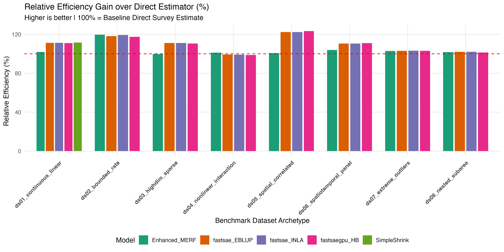
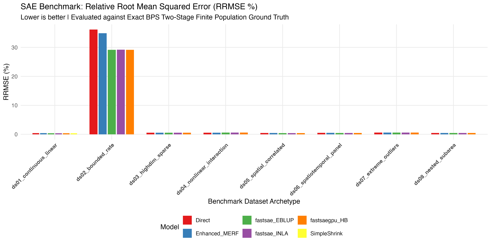

Master Leaderboard
Empirical metrics evaluated across finite-population ground truth
| Dataset | Model | RRMSE (%) | ARB (%) | Rel. Efficiency (%) | Corr | Peak RAM (MB) | Runtime (s) |
|---|---|---|---|---|---|---|---|
| Continuous Linear (Baseline Fay-Herriot) ds01_continuous_linear | Direct | 0.41% | 0.32% | 100.0% | 0.9897 | 0.0 MB | 0.00s |
| Continuous Linear (Baseline Fay-Herriot) ds01_continuous_linear | fastsaegpu_HB | 0.38% | 0.31% | 110.9% | 0.9906 | 160.0 MB | 14.04s |
| Continuous Linear (Baseline Fay-Herriot) ds01_continuous_linear | Enhanced_MERF | 0.40% | 0.32% | 101.9% | 0.9898 | 44.6 MB | 0.36s |
| Continuous Linear (Baseline Fay-Herriot) ds01_continuous_linear | fastsae_EBLUP | 0.38% | 0.31% | 111.3% | 0.9906 | 2.0 MB | 0.02s |
| Continuous Linear (Baseline Fay-Herriot) ds01_continuous_linear | fastsae_INLA | 0.38% | 0.31% | 111.3% | 0.9906 | 136.8 MB | 1.92s |
| Bounded Rate (Poverty / Prevalence Rate) ds02_bounded_rate | Direct | 36.16% | 24.67% | 100.0% | 0.9192 | 0.5 MB | 0.00s |
| Bounded Rate (Poverty / Prevalence Rate) ds02_bounded_rate | fastsaegpu_HB | 29.15% | 20.63% | 117.5% | 0.9126 | 39.2 MB | 6.41s |
| Bounded Rate (Poverty / Prevalence Rate) ds02_bounded_rate | Enhanced_MERF | 34.91% | 23.62% | 119.6% | 0.9173 | 41.0 MB | 0.32s |
| Bounded Rate (Poverty / Prevalence Rate) ds02_bounded_rate | fastsae_EBLUP | 29.15% | 20.71% | 118.1% | 0.9130 | 3.6 MB | 0.00s |
| Bounded Rate (Poverty / Prevalence Rate) ds02_bounded_rate | fastsae_INLA | 29.20% | 20.70% | 119.3% | 0.9139 | 51.0 MB | 1.22s |
| High-Dimensional Sparse (Podes / Satellite Features) ds03_highdim_sparse | Direct | 0.56% | 0.46% | 100.0% | 0.9982 | 0.0 MB | 0.00s |
| High-Dimensional Sparse (Podes / Satellite Features) ds03_highdim_sparse | fastsaegpu_HB | 0.53% | 0.43% | 110.6% | 0.9984 | 29.2 MB | 9.52s |
| High-Dimensional Sparse (Podes / Satellite Features) ds03_highdim_sparse | Enhanced_MERF | 0.56% | 0.46% | 99.7% | 0.9982 | 21.9 MB | 0.23s |
| High-Dimensional Sparse (Podes / Satellite Features) ds03_highdim_sparse | fastsae_EBLUP | 0.53% | 0.43% | 111.1% | 0.9984 | 1.0 MB | 0.00s |
| High-Dimensional Sparse (Podes / Satellite Features) ds03_highdim_sparse | fastsae_INLA | 0.53% | 0.43% | 111.1% | 0.9984 | 60.5 MB | 1.28s |
| Nonlinear & Interactions (MERF / Tree Territory) ds04_nonlinear_interaction | Direct | 0.57% | 0.45% | 100.0% | 0.9992 | 0.0 MB | 0.00s |
| Nonlinear & Interactions (MERF / Tree Territory) ds04_nonlinear_interaction | fastsaegpu_HB | 0.58% | 0.45% | 98.8% | 0.9992 | 28.7 MB | 18.88s |
| Nonlinear & Interactions (MERF / Tree Territory) ds04_nonlinear_interaction | Enhanced_MERF | 0.57% | 0.44% | 101.2% | 0.9992 | 38.4 MB | 0.38s |
| Nonlinear & Interactions (MERF / Tree Territory) ds04_nonlinear_interaction | fastsae_EBLUP | 0.58% | 0.45% | 99.3% | 0.9992 | 0.4 MB | 0.00s |
| Nonlinear & Interactions (MERF / Tree Territory) ds04_nonlinear_interaction | fastsae_INLA | 0.58% | 0.45% | 99.2% | 0.9992 | 48.0 MB | 1.33s |
| Spatial Correlated (SAR / CAR Topology) ds05_spatial_correlated | Direct | 0.47% | 0.38% | 100.0% | 0.9940 | 0.0 MB | 0.00s |
| Spatial Correlated (SAR / CAR Topology) ds05_spatial_correlated | fastsaegpu_HB | 0.42% | 0.34% | 123.4% | 0.9951 | 28.7 MB | 6.25s |
| Spatial Correlated (SAR / CAR Topology) ds05_spatial_correlated | Enhanced_MERF | 0.47% | 0.38% | 100.8% | 0.9940 | 36.7 MB | 0.31s |
| Spatial Correlated (SAR / CAR Topology) ds05_spatial_correlated | fastsae_EBLUP | 0.42% | 0.34% | 122.4% | 0.9951 | 0.4 MB | 0.00s |
| Spatial Correlated (SAR / CAR Topology) ds05_spatial_correlated | fastsae_INLA | 0.42% | 0.34% | 122.4% | 0.9951 | 46.9 MB | 1.26s |
| Spatio-Temporal Panel (D=50 x T=5) ds06_spatiotemporal_panel | Direct | 0.50% | 0.39% | 100.0% | 0.9908 | 0.0 MB | 0.00s |
| Spatio-Temporal Panel (D=50 x T=5) ds06_spatiotemporal_panel | fastsaegpu_HB | 0.47% | 0.37% | 111.0% | 0.9914 | 28.7 MB | 20.26s |
| Spatio-Temporal Panel (D=50 x T=5) ds06_spatiotemporal_panel | Enhanced_MERF | 0.49% | 0.38% | 103.9% | 0.9909 | 52.1 MB | 1.17s |
| Spatio-Temporal Panel (D=50 x T=5) ds06_spatiotemporal_panel | fastsae_EBLUP | 0.47% | 0.37% | 110.6% | 0.9914 | 0.4 MB | 0.00s |
| Spatio-Temporal Panel (D=50 x T=5) ds06_spatiotemporal_panel | fastsae_INLA | 0.47% | 0.37% | 110.6% | 0.9914 | 51.5 MB | 1.31s |
| Extreme Outliers & Shocks (Contaminated / Heavy-Tailed) ds07_extreme_outliers | Direct | 0.59% | 0.47% | 100.0% | 0.9943 | 0.1 MB | 0.00s |
| Extreme Outliers & Shocks (Contaminated / Heavy-Tailed) ds07_extreme_outliers | fastsaegpu_HB | 0.58% | 0.46% | 103.0% | 0.9943 | 28.6 MB | 9.93s |
| Extreme Outliers & Shocks (Contaminated / Heavy-Tailed) ds07_extreme_outliers | Enhanced_MERF | 0.58% | 0.46% | 102.9% | 0.9944 | 36.8 MB | 0.32s |
| Extreme Outliers & Shocks (Contaminated / Heavy-Tailed) ds07_extreme_outliers | fastsae_EBLUP | 0.58% | 0.46% | 103.1% | 0.9943 | 0.3 MB | 0.00s |
| Extreme Outliers & Shocks (Contaminated / Heavy-Tailed) ds07_extreme_outliers | fastsae_INLA | 0.58% | 0.46% | 103.2% | 0.9943 | 46.8 MB | 1.20s |
| Nested Subarea (Two-Fold Hierarchy: Province -> District) ds08_nested_subarea | Direct | 0.46% | 0.36% | 100.0% | 0.9934 | 0.0 MB | 0.00s |
| Nested Subarea (Two-Fold Hierarchy: Province -> District) ds08_nested_subarea | fastsaegpu_HB | 0.46% | 0.36% | 101.3% | 0.9933 | 28.5 MB | 6.39s |
| Nested Subarea (Two-Fold Hierarchy: Province -> District) ds08_nested_subarea | Enhanced_MERF | 0.46% | 0.36% | 101.7% | 0.9934 | 36.8 MB | 0.31s |
| Nested Subarea (Two-Fold Hierarchy: Province -> District) ds08_nested_subarea | fastsae_EBLUP | 0.45% | 0.36% | 102.1% | 0.9934 | 0.3 MB | 0.00s |
| Nested Subarea (Two-Fold Hierarchy: Province -> District) ds08_nested_subarea | fastsae_INLA | 0.46% | 0.36% | 102.0% | 0.9934 | 46.7 MB | 1.25s |
Comparative Visualizations
Direct graphical comparisons across models and dataset archetypes


BPS Two-Stage Stratified Cluster Sampling Scheme
Faithful implementation of official Badan Pusat Statistik Susenas design
Stage 1: Primary Sampling Unit (PSU)
Stratified by Urban/Rural within each Kabupaten. Selection of Blok Sensus (BS) via Probability Proportional to Size (PPS) without replacement based on household counts:
Stage 2: Secondary Sampling Unit (SSU)
Systematic sampling of exactly m = 10 households per sampled Blok Sensus with a random start. Conditional inclusion probability:
Design Weights & Variance
Calibrated weights wdhij = Mdh / (10 adh). Sampling variance ψd estimated using Taylor Series Linearization via survey::svydesign, capturing intra-cluster clustering effects (Deff > 1).
Dataset Archetype Catalogue
8 standardized data generating processes reflecting core Small Area Estimation challenges
Continuous Linear (Baseline Fay-Herriot)
Synthetic log per-capita household expenditure with 3 continuous auxiliary covariates and homoskedastic normal district shocks.
Bounded Rate (Poverty / Prevalence)
Binary household poverty indicators aggregated to district prevalence rates strictly within the unit interval (0, 1).
High-Dimensional Sparse (Podes / Satellite Features)
25 area-level administrative and remote-sensing predictors, containing only 3 true generative signals and 22 collinear noise variables.
Nonlinear & Interactions (MERF / Tree Territory)
Complex synthetic DGP featuring sine waves, quadratic polynomials, square root transformations, and multiplicative interaction terms.
Spatial Correlated (SAR / CAR Topology)
Area random effects generated via simultaneous autoregressive SAR process (rho = 0.65) over an authentic Queen adjacency spatial matrix.
Spatio-Temporal Panel (D=50 x T=5)
Multi-year repeated survey panel featuring AR(1) autocorrelation (phi = 0.70) across 5 discrete survey rounds.
Extreme Outliers & Shocks (Contaminated)
Contaminated response generating 4 disaster shock districts exhibiting +/- 8 sigma outlier deviations from regression trend.
Nested Subarea (Two-Fold Hierarchy)
Hierarchical structure with districts (kabupaten) nested inside administrative provinces with dual random effects (v_p + u_pd).
Plug-and-Play Benchmark
Benchmark your custom SAE model in 1 line of R
R API (Custom Estimator)
# 1. Source the benchmark engine
source("engine/benchmark_runner.R")
# 2. Define your model wrapper (accepts ds and formula_str)
my_custom_sae <- function(ds, formula_str) {
fit <- my_pkg::model(formula = as.formula(formula_str), vardir = "psi_dir", data = ds)
return(fit$estimates)
}
# 3. Benchmark against the full battery
results <- run_benchmark_suite(models = list("MyModel" = my_custom_sae))Terminal CLI
# Run full battery across all 8 datasets
Rscript run_test.R
# Quick check on first 3 datasets
Rscript run_test.R --quick
# Run on a single specific archetype
Rscript run_test.R --dataset=ds02_bounded_rate